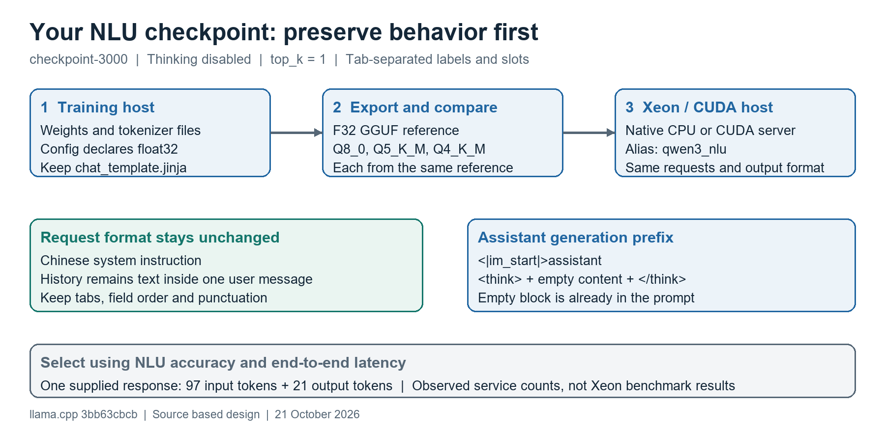

checkpoint-3000: conversion and CPU/GPU deployment
21 October 2026 | llama.cpp 3bb63cbcb | Based on four supplied metadata/template files and one production request/response. The model weights and full tokenizer vocabulary were not supplied locally.
Recommendation: preserve your existing NLU request format, thinking-off behavior and top_k=1 decoding. Export an F32 GGUF reference, then generate Q8_0, Q5_K_M and Q4_K_M directly from it. Use Q8_0 as the initial production candidate and compare on your own task set.
| Finding | Evidence | Consequence |
|---|---|---|
| Supported architecture | Qwen3ForCausalLM; model_type=qwen3 | The checked converter registers this architecture. Actual tensor/tokenizer compatibility still requires conversion. |
| Declared precision | dtype=float32 | Use --outtype f32 for the reference. The earlier generic BF16 recipe is superseded for this checkpoint. |
| Attention layout | 28 full-attention layers; 16 Q heads; 8 KV heads; head_dim=128 | F16 KV payload is about 448 MiB at 4096 tokens for one sequence, before overhead. |
| Context metadata differs | Model: 40960; tokenizer: 131072; rope_scaling=null | Tokenizer maximum is not proof of usable model context. Start at 4096 and validate longer requests. |
| Cache setting | config.json: use_cache=false | Do not edit it for GGUF conversion. llama.cpp creates its own KV cache; check effective caching in a Transformers baseline. |
| Actual serving settings | Thinking off; temp=0.01; top_k=1; top_p=0.95 | Use the production settings, which override the saved generation defaults of 0.6 / 20 / 0.95. |
| Output contract | Tab-separated domain, intent and slot assignments | Preserve tabs and labels. The output is not a JSON object. |
Qwen2Tokenizer is consistent with this Qwen3 conversion path. The 26 added-token IDs in tokenizer_config.json are within the configured vocabulary range. EOS 151645 maps to <|im_end|>; padding 151643 maps to <|endoftext|>. Generation also lists 151643 as a stop ID. The vocabulary loader recognizes both strings as generation-ending tokens.
The reported 2.3 GB weight file is consistent with FP32 storage at this scale, but the declared dtype is not a tensor-header audit. No weights were loaded or quantized during this review. The original four files were left unchanged.
Figure 1. Checkpoint-specific artifact and request flow. Convert on the host containing the checkpoint; benchmark on the actual deployment host.

intelligent_car_control [TAB] skylight_control [TAB] move_direction=开大,offset_a_little=一点
The replay bundle stores real tab characters in expected.txt. Its request.json preserves your Chinese system prompt, the history string, and all request fields. The history remains inside one user message; converting those fragments into separate chat turns would change the model input.
<|im_start|>assistant <think> </think>
This is the assistant suffix produced by your template when add_generation_prompt=true and enable_thinking=false. The empty block is part of the input. With thinking true or unspecified, this template ends at the assistant header instead. A system instruction asking for deep analysis does not override the explicit template setting.
Use --jinja --reasoning off. Keep chat_template.jinja beside the checkpoint during conversion: this checkout reads the standalone file and embeds it in GGUF when tokenizer_config.json has no embedded template. Do not add another manual chat wrapper or duplicate the empty thinking block in application code.
Six synthetic Jinja2 render cases passed, plus rendering your actual request without changing either message. This verifies template behavior at the text level. Full tokenizer-ID parity and the C++ Jinja runtime must still be checked after conversion.
Run on the Linux host where the checkpoint is accessible. Your checkpoint listing came from VM-0-59-ubuntu; the earlier Xeon host was lah-Precision-7820-Tower. Conversion can happen on either host, but inference measurements must be taken on the target machine.
These commands assume the earlier CPU build exists at $HOME/llama.cpp/build-cpu. If needed, build its llama-server, llama-quantize and llama-bench targets first. Use a supported Python version for the checkout requirements, such as Python 3.11 or 3.12.
cd "$HOME/llama.cpp" python3 -m venv .venv-convert source .venv-convert/bin/activate python -m pip install --upgrade pip python -m pip install -r requirements/requirements-convert_hf_to_gguf.txt QWEN_OUTPUT_ROOT=/data/nlu/jqli/llm_train_platform/output QWEN_CHECKPOINT="$QWEN_OUTPUT_ROOT/nlu_v12_modi_qwen3_06b_full/checkpoint-3000" QWEN_GGUF_DIR="$HOME/qwen3-nlu-gguf" mkdir -p "$QWEN_GGUF_DIR" python convert_hf_to_gguf.py "$QWEN_CHECKPOINT" \ --outfile "$QWEN_GGUF_DIR/nlu-v12-F32.gguf" --outtype f32 ./build-cpu/bin/llama-quantize \ "$QWEN_GGUF_DIR/nlu-v12-F32.gguf" \ "$QWEN_GGUF_DIR/nlu-v12-Q8_0.gguf" Q8_0 ./build-cpu/bin/llama-quantize \ "$QWEN_GGUF_DIR/nlu-v12-F32.gguf" \ "$QWEN_GGUF_DIR/nlu-v12-Q5_K_M.gguf" Q5_K_M ./build-cpu/bin/llama-quantize \ "$QWEN_GGUF_DIR/nlu-v12-F32.gguf" \ "$QWEN_GGUF_DIR/nlu-v12-Q4_K_M.gguf" Q4_K_M sha256sum "$QWEN_GGUF_DIR"/*.gguf
Keep the complete tokenizer bundle: tokenizer.json, tokenizer_config.json, chat_template.jinja, vocab.json, merges.txt, added_tokens.json and special_tokens_map.json. The four files reviewed here are enough for configuration analysis, but not enough by themselves to reproduce full tokenization or convert the weights.
Inspect converter logs for the source tensor dtypes, Qwen3 architecture, successful tensor writes and included chat template. Load the F32 GGUF and replay the known request first. If it already differs from your reference service, investigate checkpoint identity, prompt/template, tokens and runtime settings before comparing Q8/Q5/Q4.
F32 preserves an evaluation reference for this declared-FP32 checkpoint; it is not the recommended low-memory serving format. Each quantized candidate starts from that same F32 file. Avoid successive Q8-to-Q5-to-Q4 requantization. Copy the selected GGUF and its hash to the deployment host if conversion occurred elsewhere.
optimizer.pt, scheduler.pt, rng_state.pth, trainer_state.json and training_args.bin are not inference artifacts. Retain them where needed to resume training. No input file needs to be edited for the conversion above.
On the Xeon, place the chosen GGUF under $HOME/qwen3-nlu-gguf. Build native CPU binaries on the Xeon, rather than copying a native binary compiled for a different CPU. The alias below matches your existing request exactly.
cd "$HOME/llama.cpp" ./build-cpu/bin/llama-server \ -m "$HOME/qwen3-nlu-gguf/nlu-v12-Q8_0.gguf" \ --alias qwen3_nlu \ -ngl 0 -t 4 -tb 4 -c 4096 -np 1 \ -b 512 -ub 128 -ctk f16 -ctv f16 \ --jinja --reasoning off \ --samplers 'temperature;top_k;top_p' \ --temp 0.01 --top-k 1 --top-p 0.95 --min-p 0 \ --repeat-penalty 1.0 --presence-penalty 0 --frequency-penalty 0 \ --host 127.0.0.1 --port 8080 --metrics
Use nlu-v12-F32.gguf first for conversion validation, then Q8_0 and the smaller candidates. Request fields override matching defaults, so the replay request retains your production values. The explicit sampler order follows Transformers 4.57.1 temperature/top-k/top-p ordering. With top_k=1 only the highest-ranked candidate remains; small numerical changes can still flip a close decision across quantizations or backends.
The generic presence penalty of 1.5 from the earlier public-model guide is not applied here. Your production request does not specify it, and repeated NLU labels or slot words may be legitimate. The saved generation defaults are metadata; the actual service request is the relevant starting point.
nvidia-smi --query-gpu=name,driver_version,memory.total --format=csv nvcc --version cmake -S . -B build-cuda -DCMAKE_BUILD_TYPE=Release -DGGML_CUDA=ON cmake --build build-cuda -j 4 --target llama-server llama-bench
Your previously shown driver is 525.105.17. Confirm a compatible CUDA toolkit/driver/GPU combination before building; the CUDA label in nvidia-smi is not an installed-toolkit check. See the earlier deployment guide for that compatibility discussion.
For GPU serving, use the identical server command with build-cuda/bin/llama-server and -ngl 99. Check logs for full offload. Compare the same GGUF, context, input history, sampler settings and prompt-cache policy. For this short NLU task, select by end-to-end latency and concurrency results; model size alone does not establish which backend wins.
Keep 4096 initially. If the longest formatted request plus 128 output tokens fits within 2048, test -c 2048: calculated F16 KV payload falls from about 448 MiB to 224 MiB. This does not include weights, scratch buffers or allocator overhead. Do not truncate history that changes the intended NLU result.
config.json use_cache=false does not turn off llama.cpp KV caching. If testing Transformers, explicitly use use_cache=True for the inference baseline and check the effective generation settings; caching reduces repeated decode work [A].
Copy the qwen3-nlu-replay folder from the supplied ZIP to the deployment host and enter it. This uses localhost, not the remote service URL in your example. The request and response shown by you are reference evidence; no remote API was called during this review.
curl -f http://127.0.0.1:8080/health
curl --silent --show-error \
--connect-timeout 5 --max-time 30 \
-H 'Content-Type: application/json' \
--data-binary @request.json \
-o response.json \
-w 'HTTP=%{http_code} TOTAL_SECONDS=%{time_total}\n' \
http://127.0.0.1:8080/v1/chat/completions
python3 - <<'PY'
import json
from pathlib import Path
response = json.loads(Path('response.json').read_text(encoding='utf-8'))
actual = response['choices'][0]['message']['content']
expected = Path('expected.txt').read_text(encoding='utf-8').removesuffix('\n')
print('EXACT_MATCH:', actual == expected)
print('ACTUAL:', repr(actual))
PYThe 97 prompt tokens and 21 completion tokens were reported by your existing service. They are not independently verified token counts for llama.cpp. A difference in prompt token count is worth investigating before blaming quantization, although runtimes can differ in accounting conventions.
cd "$HOME/llama.cpp" ./build-cpu/bin/llama-bench \ -m "$HOME/qwen3-nlu-gguf/nlu-v12-Q8_0.gguf" \ -ngl 0 -t 2,4,8 -p 0 -n 0 -pg 97,21 \ -b 512 -ub 128 -r 5 -o json > nlu-q8-cpu.json
This is a synthetic prompt-plus-generation benchmark. It does not replay the Chinese request and excludes tokenization and sampling. Repeat on the CUDA binary with -ngl 99 and on the other quantizations. Then select settings from real API results, since HTTP, prompt processing, queueing and output handling matter for a 21-token answer.
Record first-request and warm-request latency separately. llama.cpp can reuse matching prompt prefixes by default; repeated use of one request can exaggerate savings. The supplied request-no-prefix-cache.json adds cache_prompt=false for controlled tests. This disables cross-request prefix reuse, not within-request KV caching.
Measure p50/p95 total response latency over representative requests at concurrency 1, then your real concurrency. The curl total includes client/HTTP time. It is not time to first token. Streaming is required to measure when the first generated token actually arrives. Keep network placement consistent; the old remote URL and new localhost timings are not directly comparable model-speed measurements.
The supplied response is a useful regression case, not enough to establish production accuracy. Use a held-out NLU set with known labels, history-dependent commands, multiple intents, negation, unsupported requests and device ambiguities. Include the special multi output described by your system prompt.
| Gate | What to compare |
|---|---|
| Conversion correctness | Current reference service vs F32 GGUF, using the same checkpoint and decoded prompt. Resolve mismatches before quantization tuning. |
| Output contract | Exactly three tab-separated fields for this supplied case. Other cases must follow the actual task contract, including multi. |
| Task quality | Domain/intent accuracy, required slot/value accuracy and whole-request semantic correctness. Keep exact-string match as a separate metric. |
| Robustness | No new critical device/action errors. Review cases where Q8, Q5 or Q4 changes the decision. |
| Performance | p50/p95 end-to-end latency, concurrency, peak RSS/PSS, GPU memory and prefix-cache policy. Record output token counts. |
| Selection | Keep Q8 if it meets limits. Adopt Q5 or Q4 only if their measured benefit matters and they pass the same quality threshold. |
Do not add a JSON output schema for this TSV task. If the product allows slot reordering, define the normalization explicitly; otherwise retain exact order. top_k=1 reduces sampling variation but does not guarantee bitwise-identical predictions across engines, batch shapes or quantization formats.
All three JSON files parsed. Layer count and attention types are consistent. The 26 supplied added-token IDs are in range, and EOS/padding strings match the configured IDs. Six synthetic template render cases passed; your actual request also rendered with both message strings intact and the expected non-thinking suffix. SHA-256 hashes of the four inputs are in metadata-audit.json.
No model weights or full tokenizer vocabulary were available here. Conversion, actual token IDs, generated labels, Linux build success, GPU compatibility and latency have not been verified on your machines. The source repository and uploaded files were not modified.
Qwen3 architecture registration: conversion/qwen.py
Standalone Jinja template loading: gguf-py/gguf/vocab.py
Generation metadata export: gguf-py/gguf/metadata.py
Runtime sampling defaults and overrides: common/common.cpp
Thinking flag to template setting: common/arg.cpp
Generation-ending token recognition: src/llama-vocab.cpp
Server API and prompt caching: tools/server/README.md